<!DOCTYPE lake>
<h1 data-lake-id="sic1D" data-lake-index-type="2" id="sic1D"><span data-lake-id="uadb54d90" id="uadb54d90">进入USB下载模式</span></h1><p data-lake-id="u400f5fcf" id="u400f5fcf"><a data-lake-id="u248c8f4c" href="https://doc.zh-jieli.com/AC79/zh-cn/master/getting_started/preparation/update.html" id="u248c8f4c" rel="noopener noreferrer" target="_blank"><span data-lake-id="u05acc048" id="u05acc048">https://doc.zh-jieli.com/AC79/zh-cn/master/getting_started/preparation/update.html</span></a></p><p data-lake-id="uceb4a460" id="uceb4a460"><span class="lake-fontsize-12" data-lake-id="uacbbddcc" id="uacbbddcc" style="color: rgb(34, 34, 34); background-color: rgb(252, 252, 252)">​</span><br/></p><p data-lake-id="u315334a8" id="u315334a8"><span class="lake-fontsize-12" data-lake-id="u2f90fc6f" id="u2f90fc6f" style="color: rgb(34, 34, 34); background-color: rgb(252, 252, 252)">以 AC79_DevKitBoard 开发板为例，将开发板 USB 的接口端使用合适的 USB 数据线正确连接到 PC 主机。</span></p><ul list="ufbcddc51"><li data-lake-id="uc6bae101" fid="u8efad50e" id="uc6bae101"><span class="lake-fontsize-12" data-comment-id="35453393" data-lake-id="u37a23572" id="u37a23572" style="color: rgb(34, 34, 34); background-color: rgb(252, 252, 252)">通过长按开发板的顶板 </span><span class="lake-fontsize-9" data-comment-id="35453393" data-lake-id="u65a6e467" id="u65a6e467" style="color: rgb(231, 76, 60); background-color: rgb(252, 252, 252)">update</span><span class="lake-fontsize-12" data-comment-id="35453393" data-lake-id="u814a2e69" id="u814a2e69" style="color: rgb(34, 34, 34); background-color: rgb(252, 252, 252)"> 键，同时（注意是同时, 并hold住）按 </span><span class="lake-fontsize-9" data-comment-id="35453393" data-lake-id="u2f0af220" id="u2f0af220" style="color: rgb(231, 76, 60); background-color: rgb(252, 252, 252)">reset</span><span class="lake-fontsize-12" data-comment-id="35453393" data-lake-id="ud14edd5c" id="ud14edd5c" style="color: rgb(34, 34, 34); background-color: rgb(252, 252, 252)"> 键。</span></li><li data-lake-id="u41cf793a" fid="u8efad50e" id="u41cf793a"><span class="lake-fontsize-12" data-lake-id="u3367678e" id="u3367678e" style="color: rgb(34, 34, 34); background-color: rgb(252, 252, 252)">先松开</span><span class="lake-fontsize-12" data-lake-id="uc220a032" id="uc220a032" style="color: rgb(34, 34, 34); background-color: rgb(252, 252, 252)"> </span><span class="lake-fontsize-9" data-lake-id="u05ebddc9" id="u05ebddc9" style="color: rgb(231, 76, 60); background-color: rgb(252, 252, 252)">reset</span><span class="lake-fontsize-12" data-lake-id="u24646b83" id="u24646b83" style="color: rgb(34, 34, 34); background-color: rgb(252, 252, 252)"> </span><span class="lake-fontsize-12" data-lake-id="u384473bc" id="u384473bc" style="color: rgb(34, 34, 34); background-color: rgb(252, 252, 252)">键，再松开</span><span class="lake-fontsize-12" data-lake-id="u6099fc33" id="u6099fc33" style="color: rgb(34, 34, 34); background-color: rgb(252, 252, 252)"> </span><span class="lake-fontsize-9" data-lake-id="ua03be361" id="ua03be361" style="color: rgb(231, 76, 60); background-color: rgb(252, 252, 252)">update</span><span class="lake-fontsize-12" data-lake-id="u068afe71" id="u068afe71" style="color: rgb(34, 34, 34); background-color: rgb(252, 252, 252)"> </span><span class="lake-fontsize-12" data-lake-id="ua875a283" id="ua875a283" style="color: rgb(34, 34, 34); background-color: rgb(252, 252, 252)">键，即可进入下载模式。</span></li></ul><p data-lake-id="ud8ceb117" id="ud8ceb117"></p><p data-lake-id="u1fe84036" id="u1fe84036"><span class="lake-fontsize-12" data-lake-id="u476c3d51" id="u476c3d51" style="color: rgb(34, 34, 34); background-color: rgb(252, 252, 252)">进入下载模式后，电脑弹出如下红框所示的盘符，代表进入下载模式成功。</span></p><ul list="ufbcddc51" start="3"><li data-lake-id="uf62e5d1d" fid="u8efad50e" id="uf62e5d1d"></li></ul><p data-lake-id="ubd0df29c" id="ubd0df29c"><span class="lake-fontsize-12" data-lake-id="ubbbe36bf" id="ubbbe36bf" style="color: rgb(34, 34, 34); background-color: rgb(252, 252, 252)">此时，可以依次点击</span><span class="lake-fontsize-12" data-lake-id="uebadddf1" id="uebadddf1" style="color: rgb(34, 34, 34); background-color: rgb(252, 252, 252)"> </span><span class="lake-fontsize-9" data-lake-id="u5c6faa3d" id="u5c6faa3d" style="color: rgb(231, 76, 60); background-color: rgb(252, 252, 252)">打开电脑</span><span class="lake-fontsize-12" data-lake-id="uae880a77" id="uae880a77" style="color: rgb(34, 34, 34); background-color: rgb(252, 252, 252)"> </span><span class="lake-fontsize-12" data-lake-id="u16517c9d" id="u16517c9d" style="color: rgb(34, 34, 34); background-color: rgb(252, 252, 252)">–</span><span class="lake-fontsize-12" data-lake-id="ud909cc90" id="ud909cc90" style="color: rgb(34, 34, 34); background-color: rgb(252, 252, 252)"> </span><span class="lake-fontsize-9" data-lake-id="uf925fb92" id="uf925fb92" style="color: rgb(231, 76, 60); background-color: rgb(252, 252, 252)">计算机管理</span><span class="lake-fontsize-12" data-lake-id="ub7270c86" id="ub7270c86" style="color: rgb(34, 34, 34); background-color: rgb(252, 252, 252)"> </span><span class="lake-fontsize-12" data-lake-id="ufaf3d023" id="ufaf3d023" style="color: rgb(34, 34, 34); background-color: rgb(252, 252, 252)">–</span><span class="lake-fontsize-12" data-lake-id="uf8f8a006" id="uf8f8a006" style="color: rgb(34, 34, 34); background-color: rgb(252, 252, 252)"> </span><span class="lake-fontsize-9" data-lake-id="u3e13e606" id="u3e13e606" style="color: rgb(231, 76, 60); background-color: rgb(252, 252, 252)">设备管理器</span><span class="lake-fontsize-12" data-lake-id="u93ba5a47" id="u93ba5a47" style="color: rgb(34, 34, 34); background-color: rgb(252, 252, 252)"> </span><span class="lake-fontsize-12" data-lake-id="u0494b107" id="u0494b107" style="color: rgb(34, 34, 34); background-color: rgb(252, 252, 252)">–</span><span class="lake-fontsize-12" data-lake-id="ub3180c8e" id="ub3180c8e" style="color: rgb(34, 34, 34); background-color: rgb(252, 252, 252)"> </span><span class="lake-fontsize-9" data-lake-id="u33845dff" id="u33845dff" style="color: rgb(231, 76, 60); background-color: rgb(252, 252, 252)">磁盘驱动器</span><span class="lake-fontsize-12" data-lake-id="u67ccc3d3" id="u67ccc3d3" style="color: rgb(34, 34, 34); background-color: rgb(252, 252, 252)">，可以看到如下设备</span><span class="lake-fontsize-12" data-lake-id="u30fc2fd8" id="u30fc2fd8" style="color: rgb(34, 34, 34); background-color: rgb(252, 252, 252)"> </span><span class="lake-fontsize-9" data-lake-id="ua6f80fd1" id="ua6f80fd1" style="color: rgb(231, 76, 60); background-color: rgb(252, 252, 252)">WL82</span><span class="lake-fontsize-9" data-lake-id="ue31e86c9" id="ue31e86c9" style="color: rgb(231, 76, 60); background-color: rgb(252, 252, 252)"> </span><span class="lake-fontsize-9" data-lake-id="u8a807f28" id="u8a807f28" style="color: rgb(231, 76, 60); background-color: rgb(252, 252, 252)">UBOOT1.00</span><span class="lake-fontsize-9" data-lake-id="udd9e390d" id="udd9e390d" style="color: rgb(231, 76, 60); background-color: rgb(252, 252, 252)"> </span><span class="lake-fontsize-9" data-lake-id="u4c82dc6f" id="u4c82dc6f" style="color: rgb(231, 76, 60); background-color: rgb(252, 252, 252)">USB</span><span class="lake-fontsize-9" data-lake-id="uc280c994" id="uc280c994" style="color: rgb(231, 76, 60); background-color: rgb(252, 252, 252)"> </span><span class="lake-fontsize-9" data-lake-id="u0e32351a" id="u0e32351a" style="color: rgb(231, 76, 60); background-color: rgb(252, 252, 252)">Device</span><span class="lake-fontsize-12" data-lake-id="u1b7ec94e" id="u1b7ec94e" style="color: rgb(34, 34, 34); background-color: rgb(252, 252, 252)">，即为成功进入了下载模式。</span></p><p data-lake-id="u6e6183c7" id="u6e6183c7"></p><p data-lake-id="u3c0a392b" id="u3c0a392b"><span data-lake-id="ua67e609f" id="ua67e609f">确认上述步骤之后，再次单击如下按钮，即可静静等待程序从电脑到杰理芯片中啦</span></p><p data-lake-id="ubd030ec6" id="ubd030ec6"></p><p data-lake-id="u6c7c86a6" id="u6c7c86a6"><span data-lake-id="ua721943c" id="ua721943c">整个烧录的过程大概需要个两分钟。</span></p><h2 data-lake-id="jGJG2" id="jGJG2"><span data-lake-id="ue76a4a82" id="ue76a4a82">接入串口调试工具</span></h2><p data-lake-id="uf9839f70" id="uf9839f70">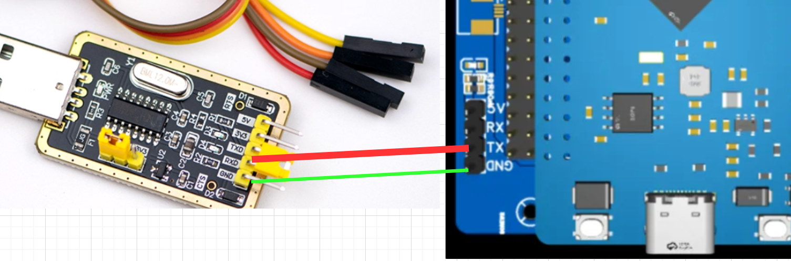</p><p data-lake-id="u375cc082" id="u375cc082"><span data-lake-id="u1c2832d5" id="u1c2832d5">找一个串口调试工具，将串口调试工具的RX引脚接到开发板上的TX引脚，将串口工具的GND与开发板的GND连接在一起即可查看日志</span></p><p data-lake-id="ufa8657be" id="ufa8657be"><br/></p><p data-lake-id="u64dcf2f5" id="u64dcf2f5"><br/></p><h1 data-lake-id="lSLBl" data-lake-index-type="2" id="lSLBl"><span data-lake-id="ucde7c261" id="ucde7c261" style="color: rgb(34, 34, 34); background-color: rgb(252, 252, 252)">SDK 应用开发说明</span></h1><p data-lake-id="u700daa7b" id="u700daa7b"><span class="lake-fontsize-12" data-lake-id="ufe5e66ed" id="ufe5e66ed" style="color: rgb(34, 34, 34); background-color: rgb(252, 252, 252)">本文档主要是协助用户快速熟悉杰理 AC79 的 SDK 流程和框架，来完成 AC79_DevKitBoard 的相关软件开发工作。</span></p><p data-lake-id="u2bcd2e73" id="u2bcd2e73"><span class="lake-fontsize-12" data-lake-id="ue2c5996c" id="ue2c5996c" style="color: rgb(34, 34, 34); background-color: rgb(252, 252, 252)">源代码下载地址：</span><a data-lake-id="u6bfca28d" href="https://gitee.com/Jieli-Tech/fw-AC79_AIoT_SDK" id="u6bfca28d" rel="noopener noreferrer" target="_blank"><span class="lake-fontsize-12" data-lake-id="ub7fc8634" id="ub7fc8634">https://gitee.com/Jieli-Tech/fw-AC79_AIoT_SDK</span></a></p><p data-lake-id="u27981218" id="u27981218"><span class="lake-fontsize-12" data-lake-id="u66c0c506" id="u66c0c506" style="color: rgb(34, 34, 34); background-color: rgb(252, 252, 252)">​</span><br/></p><ul list="uab340490"><li data-lake-id="u64b4a01a" fid="u40440224" id="u64b4a01a"><a data-lake-id="uf9c1bdae" href="https://doc.zh-jieli.com/AC79/zh-cn/master/getting_started/sdk_app_development/sdk_structure.html" id="uf9c1bdae" rel="noopener noreferrer" target="_blank"><span data-lake-id="u5dd8a9cb" id="u5dd8a9cb">5.1. SDK 目录结构</span></a></li><li data-lake-id="u618bfee6" fid="u40440224" id="u618bfee6"><a data-lake-id="u6c93c70c" href="https://doc.zh-jieli.com/AC79/zh-cn/master/getting_started/sdk_app_development/sdk_start.html" id="u6c93c70c" rel="noopener noreferrer" target="_blank"><span data-lake-id="ua7dfab9f" id="ua7dfab9f">5.2. SDK 启动流程</span></a></li><li data-lake-id="u285a0063" fid="u40440224" id="u285a0063"><a data-lake-id="ue06682f4" href="https://doc.zh-jieli.com/AC79/zh-cn/master/getting_started/sdk_app_development/app_develop_framework.html" id="ue06682f4" rel="noopener noreferrer" target="_blank"><span data-lake-id="u6f5674aa" id="u6f5674aa">5.3. APP 开发框架</span></a></li><li data-lake-id="ua77c36aa" fid="u40440224" id="ua77c36aa"><a data-lake-id="ub84b36e7" href="https://doc.zh-jieli.com/AC79/zh-cn/master/getting_started/sdk_app_development/app_develop_instruction.html" id="ub84b36e7" rel="noopener noreferrer" target="_blank"><span data-lake-id="u9063ad1d" id="u9063ad1d">5.4. SDK 开发方式</span></a></li></ul><p data-lake-id="u02328bcf" id="u02328bcf"><br/></p><p data-lake-id="u9a2da52b" id="u9a2da52b"><span data-lake-id="u8c42ac6a" id="u8c42ac6a">参考文档: </span><a data-lake-id="uac6f95e6" href="https://doc.zh-jieli.com/AC79/zh-cn/master/getting_started/sdk_app_development/index.html" id="uac6f95e6" rel="noopener noreferrer" target="_blank"><span data-lake-id="u0ce8a60b" id="u0ce8a60b">https://doc.zh-jieli.com/AC79/zh-cn/master/getting_started/sdk_app_development/index.html</span></a></p><p data-lake-id="u68fba009" id="u68fba009"><span data-lake-id="u3a9c8304" id="u3a9c8304">​</span><br/></p><p data-lake-id="u3307a4f1" id="u3307a4f1">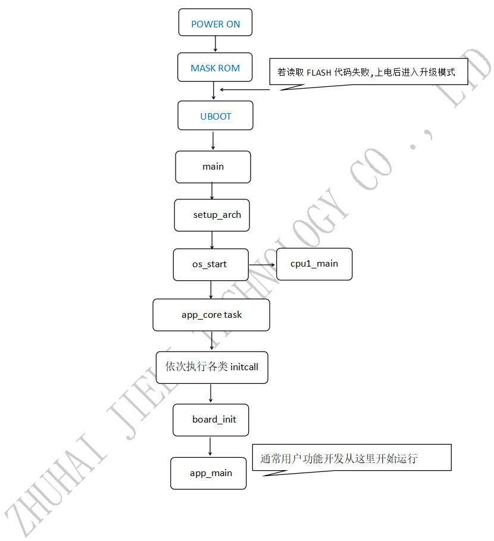</p><p data-lake-id="u7ae1fa47" id="u7ae1fa47"><span data-lake-id="u26ed6a88" id="u26ed6a88">​</span><br/></p><p data-lake-id="u2b2c8ef1" id="u2b2c8ef1"><span data-lake-id="u72df1681" id="u72df1681">下面是杰理开发的三条重要信息：</span></p><ol list="uce398f83"><li data-lake-id="u5ab685b5" fid="ua1abddee" id="u5ab685b5"><strong><span data-lake-id="ud889b185" id="ud889b185">杰理开发重点关注：board.c 、 app_config.h、app_main.c</span></strong></li><li data-lake-id="udb4e4ebd" fid="ua1abddee" id="udb4e4ebd"><strong><span data-lake-id="ue86aea1a" id="ue86aea1a">杰理开发重点关注：board.c 、 app_config.h、app_main.c</span></strong></li><li data-lake-id="u1c5077fd" fid="ua1abddee" id="u1c5077fd"><strong><span data-lake-id="u30c2471f" id="u30c2471f">杰理开发重点关注：board.c 、 app_config.h、app_main.c</span></strong></li></ol><p data-lake-id="u410c0740" id="u410c0740"><br/></p><p data-lake-id="ue097835f" id="ue097835f"><span data-lake-id="u0eb9df99" id="u0eb9df99">borad.c里面定义了开发板相关的外设io口配置， app_config.h中声明了相关的功能开关</span></p><p data-lake-id="ua9419904" id="ua9419904"><span data-lake-id="u5f12ebf5" id="u5f12ebf5">​</span><br/></p><ol list="uac65f28f"><li data-lake-id="u7e77fa6e" fid="u216d0971" id="u7e77fa6e"><span data-lake-id="u95389ce8" id="u95389ce8">在</span><code data-lake-id="u70c5cd68" id="u70c5cd68"><span data-lake-id="ub1758547" id="ub1758547">board.c</span></code><span data-lake-id="ua81c5fc6" id="ua81c5fc6">文件中, 将串口波特率改为115200  （或DevKitBoard.c）</span></li><li data-lake-id="u7ad09054" fid="u216d0971" id="u7ad09054"><span data-lake-id="u8fb0feed" id="u8fb0feed">在</span><code data-lake-id="ubb0df5f2" id="ubb0df5f2"><span data-lake-id="ud44e0818" id="ud44e0818">app_config.h</span></code><span data-lake-id="ud8bffbc0" id="ud8bffbc0">文件中定义CONFIG_DEBUG_ENABLE,打开串口调试</span></li></ol><span class="yuque-card-unsupported">[codeblock]</span><p data-lake-id="u56fc0ecf" id="u56fc0ecf"><br/></p><p data-lake-id="uff61c814" id="uff61c814"><strong><span data-lake-id="u2efca387" id="u2efca387">关闭ADKey按钮功能：</span></strong></p><p data-lake-id="ua910c7b3" id="ua910c7b3"><span data-lake-id="u8420c60b" id="u8420c60b">打开app_config.h，按照如下操作进行关闭：</span></p><span class="yuque-card-unsupported">[codeblock]</span><p data-lake-id="ue20f1072" id="ue20f1072"><span data-lake-id="u0d235fe5" id="u0d235fe5">​</span><br/></p><blockquote class="lake-alert lake-alert-color3" data-lake-id="u13608ec1" id="u13608ec1"><p data-lake-id="u32afc94a" id="u32afc94a"><strong><span data-lake-id="u1d9191de" id="u1d9191de">注意：</span></strong></p><p data-lake-id="ud74bf296" id="ud74bf296"><span data-lake-id="u7188609e" id="u7188609e">如果按照如上配置，运行程序仍然不断重启，则可能是电源供电的电流不足。尝试更换USB供电源（换个USB口插）。</span></p></blockquote><h1 data-lake-id="pFAzn" data-lake-index-type="2" id="pFAzn"><span data-lake-id="u50b6662a" id="u50b6662a">GPIO点灯</span></h1><p data-lake-id="ud320ce8a" id="ud320ce8a"><span data-lake-id="u267a37be" id="u267a37be">gpio开发相对来说要简单很多，我们以点亮开发板上面的led灯为例，</span></p><p data-lake-id="u2973b47a" id="u2973b47a">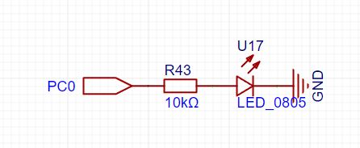</p><p data-lake-id="u49a9c07c" id="u49a9c07c"><br/></p><p data-lake-id="uc8beda49" id="uc8beda49"><span data-lake-id="ua97a9027" id="ua97a9027">代码实现</span></p><span class="yuque-card-unsupported">[codeblock]</span><p data-lake-id="u833b73c6" id="u833b73c6"><br/></p><p data-lake-id="u730ab18c" id="u730ab18c"><span data-lake-id="ua08d20eb" id="ua08d20eb">参考文档：</span><a data-lake-id="uce9ed581" href="https://doc.zh-jieli.com/AC79/zh-cn/master/module_example/peripherals/gpio.html" id="uce9ed581" rel="noopener noreferrer" target="_blank"><span data-lake-id="u71f7bf92" id="u71f7bf92">https://doc.zh-jieli.com/AC79/zh-cn/master/module_example/peripherals/gpio.html</span></a></p><p data-lake-id="uf5ab4c4a" id="uf5ab4c4a"><span data-lake-id="ub6226947" id="ub6226947">​</span><br/></p><p data-lake-id="u7218a8b8" id="u7218a8b8"><span data-lake-id="u5429bb89" id="u5429bb89">核心板引脚功能表：</span><a data-lake-id="ua148ffaa" href="https://doc.zh-jieli.com/AC79/zh-cn/master/board_description/io_table/index.html" id="ua148ffaa" rel="noopener noreferrer" target="_blank"><span data-lake-id="uf1e89cee" id="uf1e89cee">https://doc.zh-jieli.com/AC79/zh-cn/master/board_description/io_table/index.html</span></a></p><p data-lake-id="u4a2160e1" id="u4a2160e1"><br/></p><p data-lake-id="uec42f248" id="uec42f248"><span data-lake-id="u17ecef74" id="u17ecef74">​</span><br/></p><a class="yuque-card-link" href="https://www.yuque.com/attachments/yuque/0/2024/pdf/27903758/1720327224321-08417eb4-1197-488d-8ead-2c0679e1a3ef.pdf">localdoc：JL_AC79_WIFI V1.0 IO功能列表.pdf</a><h1 data-lake-id="RwfEk" data-lake-index-type="2" id="RwfEk"><span data-lake-id="u472a6a8f" id="u472a6a8f">PWM</span></h1><p data-lake-id="u990e369d" id="u990e369d"></p><p data-lake-id="ud31f658e" id="ud31f658e"><br/></p><h2 data-lake-id="EWVDn" data-lake-index-type="2" id="EWVDn"><span data-lake-id="u455c766d" id="u455c766d"> 配置PWM</span></h2><ol list="uc667bc84"><li data-lake-id="u90bc4417" fid="u2825bf7c" id="u90bc4417"><strong><span class="lake-fontsize-12" data-lake-id="u61f64f19" id="u61f64f19" style="color: rgb(34, 34, 34); background-color: rgb(252, 252, 252)">MCPWM是有多通道的PWM硬件模块，总共8组PWM通道，每组PWM包含2通道（即H和L通道），MCPWM包含死区时间设置、反向电平设置等，专用与驱动电机。</span></strong></li></ol><p data-lake-id="ue1caee75" id="ue1caee75"><span class="lake-fontsize-12" data-lake-id="ub3a401a5" id="ub3a401a5" style="color: rgb(34, 34, 34); background-color: rgb(252, 252, 252)">MCPWM为： </span></p><ul list="u8f6035b0"><li data-lake-id="u02c3bf62" fid="u83bc72f0" id="u02c3bf62"><span class="lake-fontsize-12" data-lake-id="u00195a06" id="u00195a06" style="color: rgb(34, 34, 34); background-color: rgb(252, 252, 252)">PWMCH0_H、PWMCH0_L：硬件IO为PA3、PA4</span></li><li data-lake-id="ue0cedb68" fid="u83bc72f0" id="ue0cedb68"><span class="lake-fontsize-12" data-lake-id="uc8dfcd3b" id="uc8dfcd3b" style="color: rgb(34, 34, 34); background-color: rgb(252, 252, 252)">PWMCH1_H、PWMCH1_L：硬件IO为PA7、PA8</span></li><li data-lake-id="ub1b5cea1" fid="u83bc72f0" id="ub1b5cea1"><span class="lake-fontsize-12" data-lake-id="uedd262a3" id="uedd262a3" style="color: rgb(34, 34, 34); background-color: rgb(252, 252, 252)">PWMCH2_H、PWMCH2_L：硬件IO为PC7、PC8</span></li><li data-lake-id="ua25f1e7d" fid="u83bc72f0" id="ua25f1e7d"><span class="lake-fontsize-12" data-lake-id="u7cfd190b" id="u7cfd190b" style="color: rgb(34, 34, 34); background-color: rgb(252, 252, 252)">PWMCH3_H、PWMCH3_L：硬件IO为PH0、PH1</span></li><li data-lake-id="u8bcb7137" fid="u83bc72f0" id="u8bcb7137"><span class="lake-fontsize-12" data-lake-id="u2eb8e04f" id="u2eb8e04f" style="color: rgb(34, 34, 34); background-color: rgb(252, 252, 252)">PWMCH4_H、PWMCH4_L：硬件IO为PC0、PC2</span></li><li data-lake-id="u051cd9a7" fid="u83bc72f0" id="u051cd9a7"><span class="lake-fontsize-12" data-lake-id="u85b2da9a" id="u85b2da9a" style="color: rgb(34, 34, 34); background-color: rgb(252, 252, 252)">PWMCH5_H、PWMCH5_L：硬件IO为PH3、PH7</span></li><li data-lake-id="u89e18b72" fid="u83bc72f0" id="u89e18b72"><span class="lake-fontsize-12" data-lake-id="uf1bdf62a" id="uf1bdf62a" style="color: rgb(34, 34, 34); background-color: rgb(252, 252, 252)">PWMCH6_H、PWMCH6_L：硬件IO为PB2、PB3</span></li><li data-lake-id="u55515bed" fid="u83bc72f0" id="u55515bed"><span class="lake-fontsize-12" data-lake-id="u24f9c3a8" id="u24f9c3a8" style="color: rgb(34, 34, 34); background-color: rgb(252, 252, 252)">PWMCH7_H、PWMCH7_L：硬件IO为PB6、PB7</span></li></ul><ol list="u82688386" start="2"><li data-lake-id="u41a103a1" fid="u1f5d955f" id="u41a103a1"><strong><span class="lake-fontsize-12" data-lake-id="u339a77ad" id="u339a77ad" style="color: rgb(34, 34, 34); background-color: rgb(252, 252, 252)">定时器2和定时器3的PWM</span></strong></li></ol><p data-lake-id="u42dba25e" id="u42dba25e"><span class="lake-fontsize-12" data-lake-id="ub98ab815" id="ub98ab815" style="color: rgb(34, 34, 34); background-color: rgb(252, 252, 252)">定时器的PWM可以映射任意IO。</span></p><h2 data-lake-id="EHhbR" data-lake-index-type="2" id="EHhbR"><span data-lake-id="u6456f212" id="u6456f212">示例配置</span></h2><p data-lake-id="u50347bca" id="u50347bca"><span data-lake-id="u9f8a8a93" id="u9f8a8a93">在</span><code data-lake-id="u240976f5" id="u240976f5"><span data-lake-id="u02258885" id="u02258885">board.c</span></code><span data-lake-id="u6af96906" id="u6af96906">文件中配置</span></p><span class="yuque-card-unsupported">[codeblock]</span><p data-lake-id="uc74872ba" id="uc74872ba"><span data-lake-id="u4de0ebc3" id="u4de0ebc3">配置完成之后,还要记得注册设备</span></p><span class="yuque-card-unsupported">[codeblock]</span><h2 data-lake-id="r1tiq" data-lake-index-type="2" id="r1tiq"><span data-lake-id="u9efbcd28" id="u9efbcd28">示例代码</span></h2><span class="yuque-card-unsupported">[codeblock]</span><p data-lake-id="u99e137bc" id="u99e137bc"><span data-lake-id="u4897828b" id="u4897828b">参考文档: </span><a data-lake-id="u4900ab4c" href="https://doc.zh-jieli.com/AC79/zh-cn/master/module_example/peripherals/pwm.html" id="u4900ab4c" rel="noopener noreferrer" target="_blank"><span data-lake-id="u60d66288" id="u60d66288">https://doc.zh-jieli.com/AC79/zh-cn/master/module_example/peripherals/pwm.html</span></a></p><p data-lake-id="uf48cc479" id="uf48cc479"><br/></p><h1 data-lake-id="ECrxd" data-lake-index-type="2" id="ECrxd"><span data-lake-id="ue5e7161b" id="ue5e7161b">ADC按键</span></h1><p data-lake-id="u0daf3777" id="u0daf3777">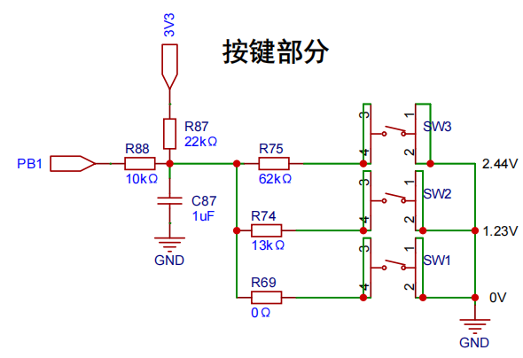</p><p data-lake-id="ufcc46f1e" id="ufcc46f1e"><br/></p><h2 data-lake-id="VBiFD" data-lake-index-type="2" id="VBiFD"><span data-lake-id="ud429bc57" id="ud429bc57">编译环境添加</span></h2><p data-lake-id="uea336ad8" id="uea336ad8"><span data-lake-id="u0d5423c5" id="u0d5423c5">添加头文件扫描路径：</span><code data-lake-id="u6a02828e" id="u6a02828e"><span data-lake-id="u7dc1844a" id="u7dc1844a">include_lib\driver\device</span></code><span data-lake-id="u3a80396d" id="u3a80396d">  (默认已添加)</span></p><p data-lake-id="ubaa644e7" id="ubaa644e7"><span data-lake-id="u78d05bdb" id="u78d05bdb">递归添加头文件：</span><code data-lake-id="ue56f57b5" id="ue56f57b5"><span data-lake-id="u5f50d9d0" id="u5f50d9d0">include_lib\driver\device\key</span></code><span data-lake-id="u370a2d2b" id="u370a2d2b"> （该目录下的所有.h文件）</span></p><p data-lake-id="ue993cf8b" id="ue993cf8b"><span data-lake-id="u21d550cc" id="u21d550cc">递归添加c文件：</span><code data-lake-id="u0aa8a2a7" id="u0aa8a2a7"><span data-lake-id="u827eb89a" id="u827eb89a">apps\common\key</span></code><span data-lake-id="u6d1c687f" id="u6d1c687f">	（该目录下的所有.c文件）</span></p><p data-lake-id="uadc9d2ce" id="uadc9d2ce"><span data-lake-id="u1ff38a4c" id="u1ff38a4c">​</span><br/></p><blockquote class="lake-alert lake-alert-color3" data-lake-id="u9d186f48" id="u9d186f48"><p data-lake-id="u6bb580ee" id="u6bb580ee"><strong><span data-lake-id="ue0333ad4" id="ue0333ad4">注意：</span></strong></p><p data-lake-id="u24e7bb6b" id="u24e7bb6b"><span data-lake-id="uc6ba60dd" id="uc6ba60dd">如果不使用ADKey，则应将其宏开关注释掉，否则系统会不断重启</span></p><p data-lake-id="ud581f8af" id="ud581f8af"><span data-lake-id="ud6a97890" id="ud6a97890">即打开</span><code data-lake-id="u95b0fed3" id="u95b0fed3"><span data-lake-id="ub27ac60d" id="ub27ac60d">app_config.h</span></code><span data-lake-id="u4577ebaf" id="u4577ebaf">文件，将如下代码进行注释</span></p><p data-lake-id="u45bb3e12" id="u45bb3e12"><code data-lake-id="ufc84d867" id="ufc84d867"><span data-lake-id="u4c1cf2af" id="u4c1cf2af">// #define CONFIG_KEY_ENABLE</span></code></p></blockquote><h2 data-lake-id="R5YCn" data-lake-index-type="2" id="R5YCn"><span data-lake-id="u3d2b79c9" id="u3d2b79c9">按键的配置</span></h2><p data-lake-id="ua6223999" id="ua6223999"><span data-lake-id="u52023ebd" id="u52023ebd">这个案例中，我们以adc按键为例，我们首先打开</span><strong><span data-lake-id="u7c23f697" id="u7c23f697">board.c</span></strong><span data-lake-id="ubecb2ae4" id="ubecb2ae4">文件，添加与按键相关的配置。</span></p><p data-lake-id="u76e5c348" id="u76e5c348"><span data-lake-id="uba073632" id="uba073632">下边配置引脚的代码已高亮显示：</span></p><span class="yuque-card-unsupported">[codeblock]</span><p data-lake-id="ua0a8aa88" id="ua0a8aa88"><span data-lake-id="ue64892db" id="ue64892db">配置ADC和key初始化</span></p><span class="yuque-card-unsupported">[codeblock]</span><p data-lake-id="u66634afe" id="u66634afe"><span data-lake-id="uc3d6c21d" id="uc3d6c21d">当我们看到这种带有</span><strong><span data-lake-id="ub0e50e8d" id="ub0e50e8d">#if 条件 </span></strong><span data-lake-id="ua6169601" id="ua6169601">的宏定义的时候， 首先想想这个</span><strong><span data-lake-id="uf99b11fe" id="uf99b11fe">宏定义有没有配置</span></strong><span data-lake-id="uf1ffee6d" id="uf1ffee6d">，</span><strong><span data-lake-id="uc669f7c6" id="uc669f7c6">在哪里配置，</span></strong><span data-lake-id="u45bac639" id="u45bac639">当然是在前面讲过的</span><strong><span data-lake-id="u77465a4a" id="u77465a4a">app_config.h</span></strong><span data-lake-id="u1a76ef66" id="u1a76ef66">文件里面配置了啊，重要的事情已经说过三遍啦！</span></p><p data-lake-id="u12ebb64d" id="u12ebb64d"><span data-lake-id="uf82a7cdb" id="uf82a7cdb">打开</span><strong><span data-lake-id="u8ea2c1cd" id="u8ea2c1cd">app_config.h</span></strong><span data-lake-id="u2e92593f" id="u2e92593f">文件，确保</span><strong><span data-lake-id="ub7adf206" id="ub7adf206">TCFG_ADKEY_ENABLE</span></strong><span data-lake-id="u5fb24710" id="u5fb24710">有没有配置为1</span></p><span class="yuque-card-unsupported">[codeblock]</span><h2 data-lake-id="Lg49q" data-lake-index-type="2" id="Lg49q"><span data-lake-id="ua43fc65f" id="ua43fc65f">按键的回调</span></h2><p data-lake-id="u10a67cc1" id="u10a67cc1"><span data-lake-id="ufb776bd1" id="ufb776bd1">我们可以在</span><code data-lake-id="u3ff262a3" id="u3ff262a3"><span data-lake-id="u68082c43" id="u68082c43">app_main.c</span></code><span data-lake-id="u8886cba2" id="u8886cba2">文件中的事件回调函数中，增加按键相关的回调函数，下面的打印的value就是我们在board.c文件里面配置的value值</span></p><span class="yuque-card-unsupported">[codeblock]</span><p data-lake-id="u8c3b0089" id="u8c3b0089"><span data-lake-id="uda597d00" id="uda597d00">然后在入口函数里添加此事件处理操作</span></p><span class="yuque-card-unsupported">[codeblock]</span><p data-lake-id="u00c7af5a" id="u00c7af5a"><span data-lake-id="ud5617bb9" id="ud5617bb9">至此配置完毕，编译烧录完毕后，可以尝试对按钮进行短按长按操作。</span></p><p data-lake-id="u6e04ad08" id="u6e04ad08"><br/></p><p data-lake-id="u0e76719f" id="u0e76719f"><span data-lake-id="u714ecf78" id="u714ecf78">参考文档：</span><a data-lake-id="u6eadfb93" href="https://doc.zh-jieli.com/AC79/zh-cn/master/module_example/peripherals/key.html" id="u6eadfb93" rel="noopener noreferrer" target="_blank"><span data-lake-id="ud2e45aa3" id="ud2e45aa3">https://doc.zh-jieli.com/AC79/zh-cn/master/module_example/peripherals/key.html</span></a></p><h1 data-lake-id="zusAb" data-lake-index-type="2" id="zusAb"><span data-lake-id="u37514fde" id="u37514fde">串口收发</span></h1><p data-lake-id="uf09f3911" id="uf09f3911">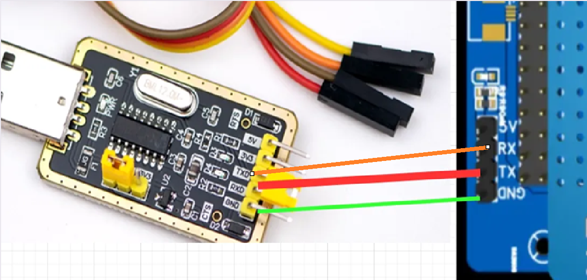</p><p data-lake-id="u27ce7d50" id="u27ce7d50"><span data-lake-id="u8e715510" id="u8e715510">首先需要对串口进行相应的配置，让它能够支持收发数据， 在board.c文件中进行如下配置</span></p><span class="yuque-card-unsupported">[codeblock]</span><p data-lake-id="u829f51df" id="u829f51df"><span data-lake-id="u4437075f" id="u4437075f">配置完成之后，记得检查设备有没有被注册，宏开关是否打开</span></p><span class="yuque-card-unsupported">[codeblock]</span><span class="yuque-card-unsupported">[codeblock]</span><h2 data-lake-id="UcxJC" data-lake-index-type="2" id="UcxJC"><span data-lake-id="ucd36add7" id="ucd36add7">串口初始化</span></h2><span class="yuque-card-unsupported">[codeblock]</span><h2 data-lake-id="qXxWR" data-lake-index-type="2" id="qXxWR"><span data-lake-id="ue6f66bfb" id="ue6f66bfb">收数据</span></h2><span class="yuque-card-unsupported">[codeblock]</span><h2 data-lake-id="dxNKO" data-lake-index-type="2" id="dxNKO"><span data-lake-id="u76697a26" id="u76697a26">发数据</span></h2><span class="yuque-card-unsupported">[codeblock]</span><h2 data-lake-id="MvbCA" data-lake-index-type="2" id="MvbCA"><span data-lake-id="u4cfc9c25" id="u4cfc9c25">启动任务线程</span></h2><span class="yuque-card-unsupported">[codeblock]</span><p data-lake-id="u0e5f616d" id="u0e5f616d"><br/></p><h2 data-lake-id="jSRTi" data-lake-index-type="2" id="jSRTi"><span data-lake-id="u5f9ef251" id="u5f9ef251">完整案例</span></h2><p data-lake-id="ue55c09b6" id="ue55c09b6"><span data-lake-id="ue463de42" id="ue463de42">在独立任务里，接收uart1数据，并回显给发送者</span></p><ul list="u4e896cd2"><li data-lake-id="uab46ce8e" fid="u705390fd" id="uab46ce8e"><span data-lake-id="u90e9c2d7" id="u90e9c2d7">app_config.h添加如下内容</span></li></ul><span class="yuque-card-unsupported">[codeblock]</span><ul list="u4e896cd2" start="2"><li data-lake-id="u36f3c578" fid="u705390fd" id="u36f3c578"><span data-lake-id="ud05a8fd0" id="ud05a8fd0">board.c</span></li></ul><span class="yuque-card-unsupported">[codeblock]</span><ul list="u3b0c6af0"><li data-lake-id="u06105412" fid="u5ed50f42" id="u06105412"><span data-lake-id="u28fd063a" id="u28fd063a">创建</span><code data-lake-id="u4d07b080" id="u4d07b080"><span data-lake-id="u5c719915" id="u5c719915">itheima_uart_demo.c</span></code><span data-lake-id="ue7a8decb" id="ue7a8decb">在itheima目录</span></li></ul><span class="yuque-card-unsupported">[codeblock]</span><h1 data-lake-id="oOztS" data-lake-index-type="2" id="oOztS"><span data-lake-id="ufc56b579" id="ufc56b579">配置说明&amp;错误处理</span></h1><h2 data-lake-id="dwRqE" data-lake-index-type="2" id="dwRqE"><span data-lake-id="u5f982957" id="u5f982957">修改蓝牙名称</span></h2><p data-lake-id="u0ebb6971" id="u0ebb6971"><code data-lake-id="ud63b5ba9" id="ud63b5ba9"><span data-lake-id="u88f0bf41" id="u88f0bf41">apps/common/config/user_cfg.c</span></code><span data-lake-id="u2d1784d0" id="u2d1784d0">文件中找到下面这个函数,将它修改为自己想要的名称</span></p><p data-lake-id="uc6ab68a5" id="uc6ab68a5"><strong><span data-lake-id="ueff74dd3" id="ueff74dd3">注意: 以"JL-"开头, 方便继续后续的学习</span></strong></p><span class="yuque-card-unsupported">[codeblock]</span><p data-lake-id="u0b737520" id="u0b737520"><br/></p><p data-lake-id="u3de7d23e" id="u3de7d23e"><span data-lake-id="u32929ed6" id="u32929ed6">参考文档: </span><a data-lake-id="uafe5b775" href="https://doc.zh-jieli.com/Tools/zh-cn/dev_tools/dev_env/index.html" id="uafe5b775" rel="noopener noreferrer" target="_blank"><span data-lake-id="ucc0bdf7b" id="ucc0bdf7b">https://doc.zh-jieli.com/Tools/zh-cn/dev_tools/dev_env/index.html</span></a></p><h2 data-lake-id="wuJZ1" data-lake-index-type="2" id="wuJZ1"><span data-lake-id="ucd0bb1b9" id="ucd0bb1b9">清除DevKitBoard大量日志</span></h2><p data-lake-id="ufda39f31" id="ufda39f31"><span data-lake-id="ud2766738" id="ud2766738">打开如下路径：</span></p><p data-lake-id="u5b2f0293" id="u5b2f0293"><code data-lake-id="ua891868c" id="ua891868c"><span data-lake-id="u290be92d" id="u290be92d">apps/demo/demo_DevKitBoard/wifi_demo_task.c</span></code></p><p data-lake-id="u07d2139e" id="u07d2139e"><span data-lake-id="uc0fa722f" id="uc0fa722f">注释掉</span><code data-lake-id="u3896df10" id="u3896df10"><span data-lake-id="u13335bf3" id="u13335bf3">wifi_status</span></code><span data-lake-id="u74034c4b" id="u74034c4b">函数的前两行代码，如下：</span></p><span class="yuque-card-unsupported">[codeblock]</span><p data-lake-id="u540a632e" id="u540a632e"><span data-lake-id="u6f94b450" id="u6f94b450">可以清除如下日志：</span></p><span class="yuque-card-unsupported">[codeblock]</span><h2 data-lake-id="ZGihn" data-lake-index-type="2" id="ZGihn"><span data-lake-id="ud586291c" id="ud586291c">出现大量pthread_开头的错误</span></h2><p data-lake-id="u305548ac" id="u305548ac"><br/></p><p data-lake-id="u94a2f44e" id="u94a2f44e">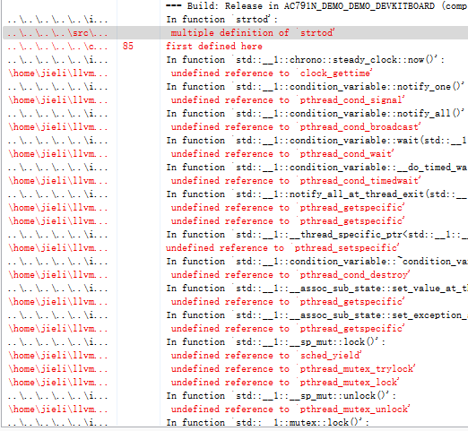</p><h3 data-lake-id="zRPm2" data-lake-index-type="2" id="zRPm2"><span data-lake-id="ua39e1933" id="ua39e1933">右键工程Build Options</span></h3><p data-lake-id="uf9a9e36d" id="uf9a9e36d">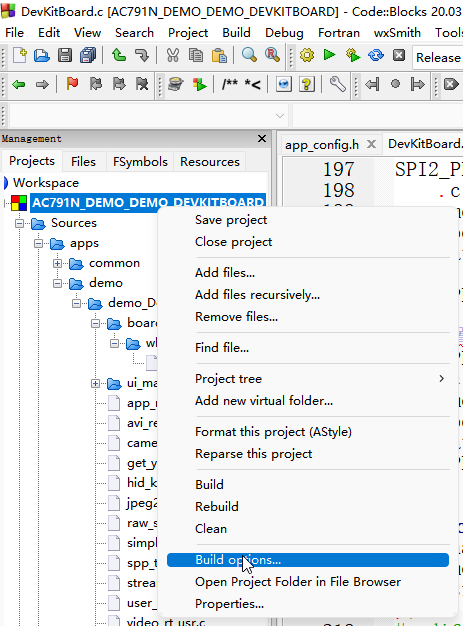</p><h3 data-lake-id="keI8o" data-lake-index-type="2" id="keI8o"><span data-lake-id="uc2011cb3" id="uc2011cb3">在标红的位置新增一行--start-group</span></h3><p data-lake-id="u179e636f" id="u179e636f">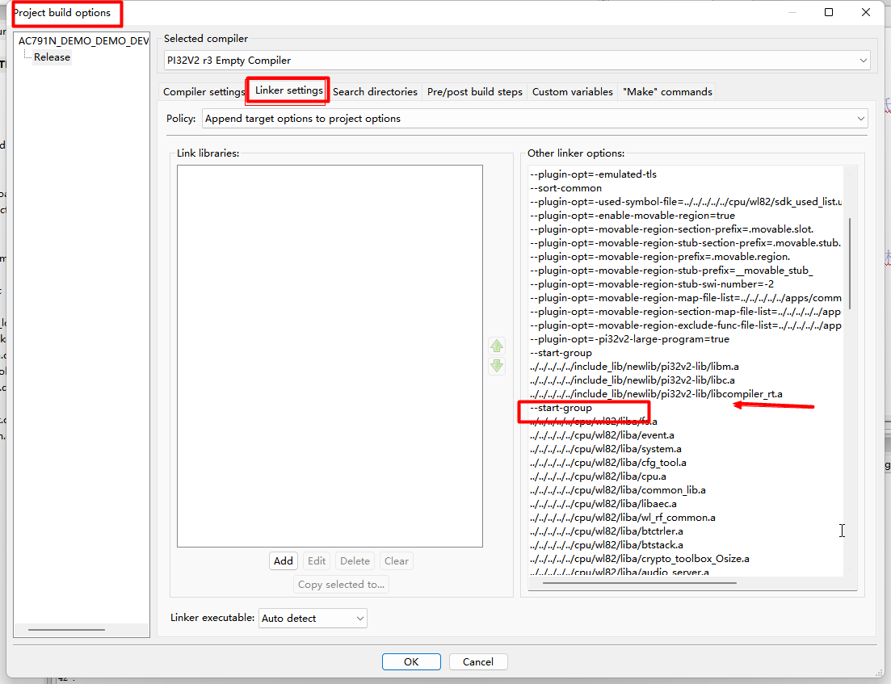</p><h3 data-lake-id="O7hAk" data-lake-index-type="2" id="O7hAk"><span data-lake-id="u885ed793" id="u885ed793">在这个配置的末尾新增一行--end-group</span></h3><p data-lake-id="u4455d352" id="u4455d352">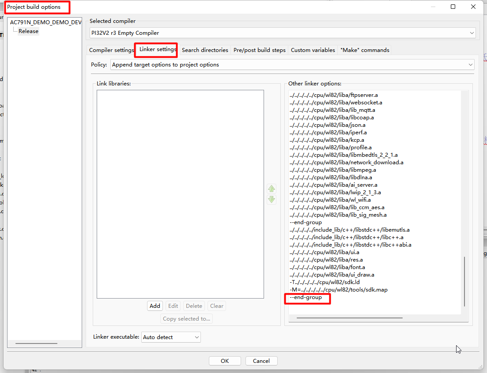</p><p data-lake-id="ufb4ff37a" id="ufb4ff37a"><br/></p><h2 data-lake-id="R8hk9" data-lake-index-type="2" id="R8hk9"><span data-lake-id="u4e8d222f" id="u4e8d222f">文件路径显示出错</span></h2><p data-lake-id="u398db351" id="u398db351"><span data-lake-id="ubf6747ee" id="ubf6747ee">状态栏文件路径显示太长，是codeblock软件出错了</span></p><p data-lake-id="uadee7c7c" id="uadee7c7c">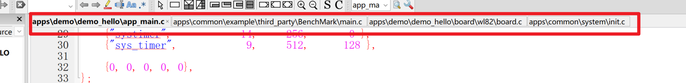</p><p data-lake-id="u465ff3c5" id="u465ff3c5">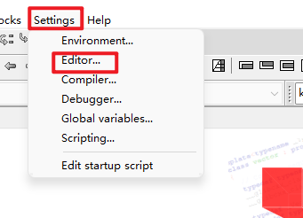</p><p data-lake-id="u2a4569c0" id="u2a4569c0"><span data-lake-id="ua5c9f1f6" id="ua5c9f1f6">将下面的勾选先去除，确定</span></p><p data-lake-id="u40e2fcce" id="u40e2fcce"><span data-lake-id="u2579e7d0" id="u2579e7d0">然后再把勾选选中，确定</span></p><p data-lake-id="u6250eb1c" id="u6250eb1c">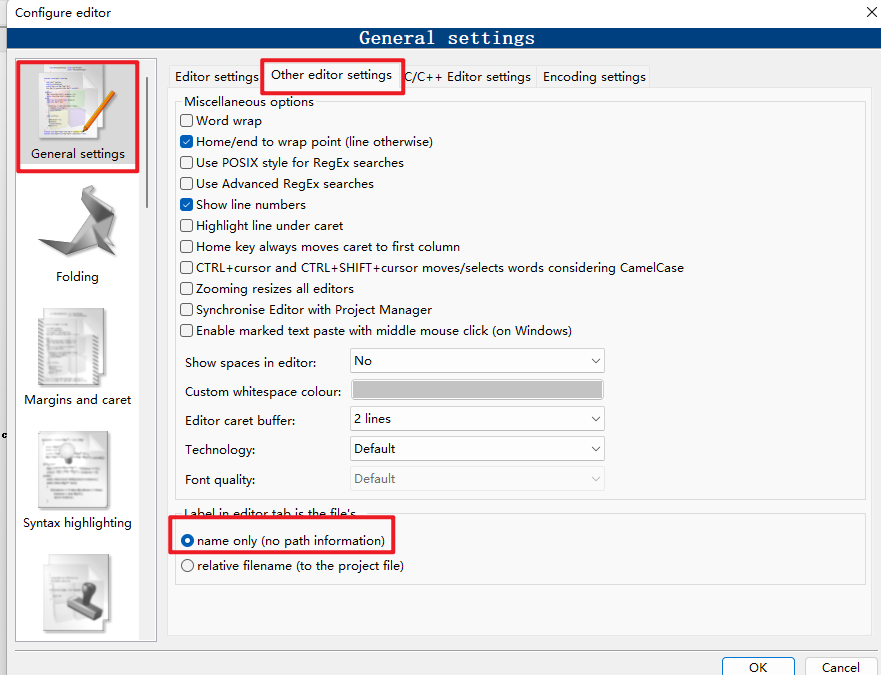</p><p data-lake-id="u70c6f9e9" id="u70c6f9e9"><br/></p><h2 data-lake-id="lSLIM" data-lake-index-type="2" id="lSLIM"><span data-lake-id="u9d3d92d8" id="u9d3d92d8" style="color: var(--yq-ant-heading-color)">让Tab更清晰</span></h2><p data-lake-id="u9a5247fc" id="u9a5247fc"><span class="lake-fontsize-11" data-lake-id="u5558e712" id="u5558e712" style="color: rgb(38, 38, 38)">原本的Tab标签颜色相同，不容易分辨哪个文件是当前编辑的文件</span></p><p data-lake-id="ue5f94da1" id="ue5f94da1">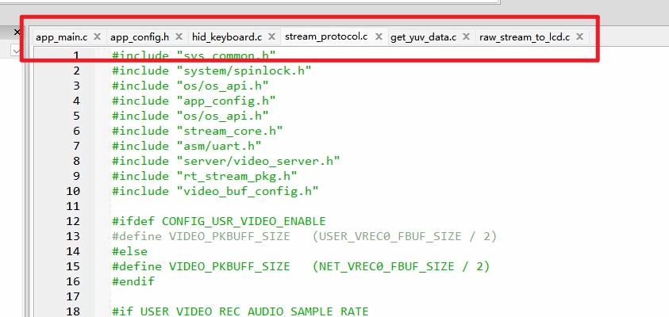</p><p data-lake-id="u0c95c59a" id="u0c95c59a"><span class="lake-fontsize-11" data-lake-id="u5851cf80" id="u5851cf80" style="color: rgb(38, 38, 38)">​</span><br/></p><p data-lake-id="u0267618f" id="u0267618f"><strong><span class="lake-fontsize-11" data-lake-id="u2bddc509" id="u2bddc509" style="color: rgb(38, 38, 38)">通过修改配置使之更清晰，效果如下：</span></strong></p><p data-lake-id="u83ab1b33" id="u83ab1b33">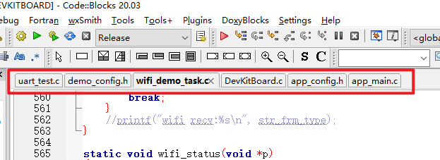</p><p data-lake-id="uff1d8d85" id="uff1d8d85"><strong><span class="lake-fontsize-11" data-lake-id="ueb5bd75d" id="ueb5bd75d" style="color: rgb(38, 38, 38)">步骤1：</span></strong><span class="lake-fontsize-11" data-lake-id="ua56f6689" id="ua56f6689" style="color: rgb(38, 38, 38)">打开</span><code data-lake-id="uc8f7d7df" id="uc8f7d7df"><span class="lake-fontsize-11" data-lake-id="uf94beeea" id="uf94beeea" style="color: rgb(38, 38, 38)">Settings</span></code><span class="lake-fontsize-11" data-lake-id="ucc7a77a2" id="ucc7a77a2" style="color: rgb(38, 38, 38)"> -</span><code data-lake-id="u00710e38" id="u00710e38"><span class="lake-fontsize-11" data-lake-id="ud6761f50" id="ud6761f50" style="color: rgb(38, 38, 38)">Environment...</span></code></p><p data-lake-id="u23a4d84e" id="u23a4d84e">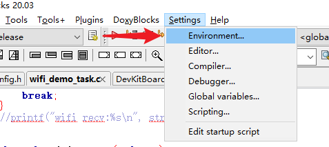</p><p data-lake-id="ub2b43a35" id="ub2b43a35"><strong><span class="lake-fontsize-11" data-lake-id="u05e52466" id="u05e52466" style="color: rgb(38, 38, 38)">步骤2：</span></strong><span class="lake-fontsize-11" data-lake-id="u379be4ca" id="u379be4ca" style="color: rgb(38, 38, 38)">打开</span><code data-lake-id="u7b8bf54e" id="u7b8bf54e"><span class="lake-fontsize-11" data-lake-id="ud3d459b3" id="ud3d459b3" style="color: rgb(38, 38, 38)">Notebooks appearance</span></code></p><p data-lake-id="u0c3b5b63" id="u0c3b5b63">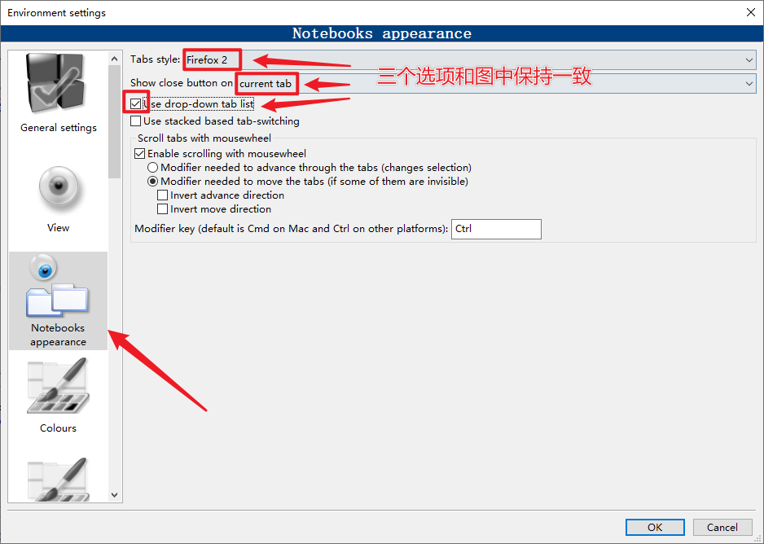</p><h2 data-lake-id="P8i10" data-lake-index-type="2" id="P8i10"><span data-lake-id="u589fa91f" id="u589fa91f">关闭宏语法识别功能</span></h2><p data-lake-id="u471f7d41" id="u471f7d41"><span class="lake-fontsize-11" data-lake-id="u3b4eb776" id="u3b4eb776">自带的宏判定可能有误，导致本来开关是打开的，代码仍然是灰色的。所以需要关闭掉这个开关。</span></p><p data-lake-id="u1901e686" id="u1901e686"><strong><span class="lake-fontsize-11" data-lake-id="uf2224b4b" id="uf2224b4b">问题现象：</span></strong></p><p data-lake-id="ucdcec906" id="ucdcec906">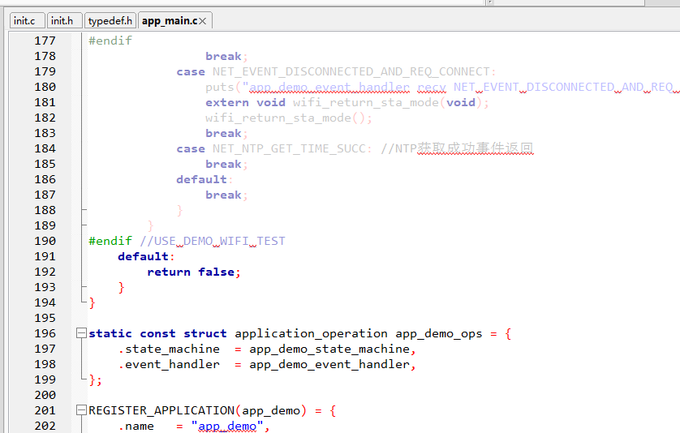</p><p data-lake-id="u0666c20e" id="u0666c20e"><strong><span class="lake-fontsize-11" data-lake-id="u9da00409" id="u9da00409">​</span></strong><br/></p><p data-lake-id="u7573044a" id="u7573044a"><strong><span class="lake-fontsize-11" data-lake-id="ud9ca14d4" id="ud9ca14d4">解决办法：</span></strong><span class="lake-fontsize-11" data-lake-id="u49877da4" id="u49877da4">打开Settings -&gt; Editor...</span></p><p data-lake-id="u06d7029e" id="u06d7029e">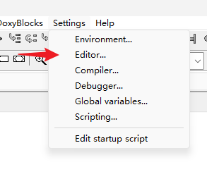</p><p data-lake-id="u535f3a74" id="u535f3a74"><span data-lake-id="u1e073a47" id="u1e073a47">去掉</span><code data-lake-id="u01e5c5d7" id="u01e5c5d7"><span data-lake-id="uf6f1b840" id="uf6f1b840">Interpret #if, #else ...</span></code><span data-lake-id="u63046600" id="u63046600">前边的对勾</span></p><p data-lake-id="u3740a767" id="u3740a767">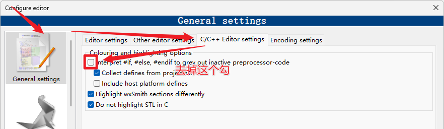</p><h2 data-lake-id="ltORp" data-lake-index-type="2" id="ltORp"><span data-lake-id="u94964458" id="u94964458">Security Warning</span></h2><p data-lake-id="u276dd184" id="u276dd184">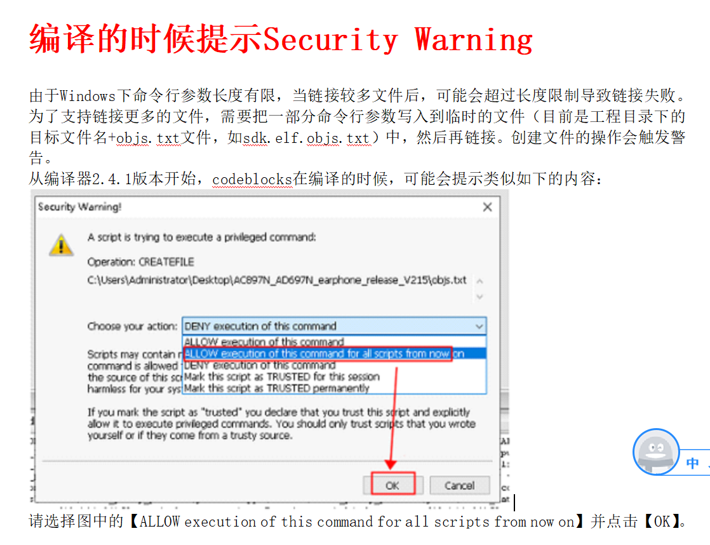</p><h2 data-lake-id="yk2kS" data-lake-index-type="2" id="yk2kS"><span data-lake-id="u6c3427cb" id="u6c3427cb">其他常见问题处理</span></h2><p data-lake-id="u82fcc0a6" id="u82fcc0a6"><br/></p><a class="yuque-card-link" href="https://doc.zh-jieli.com/Tools/zh-cn/dev_tools/faqs/index.html" rel="noopener noreferrer" target="_blank">bookmarklink：bookmarklink</a><h1 data-lake-id="iGqDg" data-lake-index-type="2" id="iGqDg"><span data-lake-id="ufd4e9353" id="ufd4e9353">练习</span></h1><ul list="u5b96302b"><li data-lake-id="udd05c5c8" fid="ue0e95e54" id="udd05c5c8"><span data-lake-id="u3e87efdb" id="u3e87efdb">修改Wifi名称，通过日志查看修改后的名称</span></li><li data-lake-id="u5dcfa08a" fid="ue0e95e54" id="u5dcfa08a"><span data-lake-id="u74ae113c" id="u74ae113c">修改蓝牙名称，通过日志查看修改后的名称</span></li><li data-lake-id="ub4fcd283" fid="ue0e95e54" id="ub4fcd283"><span data-lake-id="ube760285" id="ube760285">通过按钮点灯，切换LED灯亮灭</span></li></ul>